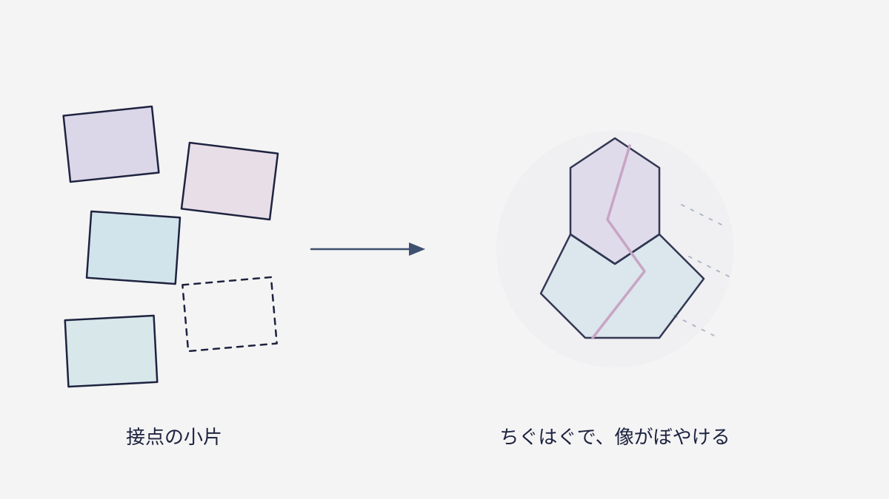

— 01 —ブランドは「頭の中」にある
コンビニでいつも同じお菓子を手に取る。知らない街で、つい知っているチェーン店に入ってしまう。これは「あの名前なら、だいたいこうだろう」という期待が、あなたの頭の中にあるからです。ブランドとは、会社がロゴとして持っているものではなく、受け手の頭の中に結ばれる“期待の像”のこと。
だからロゴやCMは「ブランドそのもの」ではなく、その像を作るための道具にすぎません。像がよくできていれば、人はあなたを体験する前から、もう選ぶ準備ができている。ブランドとは、選ばれる理由を先回りして相手の記憶に置いておく仕組みなのです。
面白いのは、あなたが「うちにブランドなんてない」と思っていても、取引先やお客さんの頭の中には、すでに何らかの像が結ばれていること。良いか悪いか、はっきりかぼんやりか——その違いがあるだけです。だからブランディングとは、像をゼロから作る話ではなく、いまある像を、狙って整えていく話なのです。
— 02 —なぜ「見た目」だけでは足りないのか
どんなに高級そうなロゴを付けても、店員の態度が悪ければ像はあっけなく崩れます。頭の中の像は、ロゴ・言葉・接客・商品・買った後の対応まで、あらゆる接点の“総和”で決まるからです。一箇所だけ立派でも、他がちぐはぐなら「結局この会社、何なの？」と像はぼやけてしまう。
たとえば、サイトはとてもおしゃれなのに、問い合わせの返信が雑で遅い。その瞬間、お客さんの中では「見た目だけの会社」という像に書き換わります。たった一つの綻びが、それまで積み上げた印象を決めてしまうのです。だから、いちばん目立つ入口だけを飾っても足りません。
つまりブランドづくりとは、見た目を整える一度きりの作業ではなく、すべての接点で「同じ約束」を守り続ける運用です。派手さよりも、ぶれないこと。一貫していること、そのものが信頼になる。逆に言えば、小さな一貫の積み重ねでいいので、特別な才能がなくても続けられる、ということでもあります。
— 03 —ブランドがあると、何が得なのか
頭の中に良い像があれば、値段を比べられる前に選ばれます。広告費が少なくても、名前で指名して来てくれる。採用でも「あの会社で働きたい」と思ってもらえる。ブランドは、集客・営業・採用のすべてを楽にしてくれる“見えない資産”です。
逆に像がない会社は、毎回ゼロから「なぜ自分を選ぶべきか」を説明し、最後は値段で比べられます。説明にかかる時間も、値引きで削れる利益も、すべてコスト。ブランドとは、その説明とコストを先回りして省いてくれる仕組みでもあるのです。
だからブランドは、大企業だけのものではありません。むしろ広告費も人手も限られる小さな会社ほど、効いてきます。一人の良い口コミが、次のお客さんを連れてくる。その連鎖が自然に回り始める状態——それが、小さな会社にとってのブランドの、いちばん現実的で頼もしい姿です。

— 04 —では、うちのブランドはどう知る？
自分の会社の“頭の中の像”を知る、いちばん簡単な方法があります。お客さんや取引先に「うちを一言で言うと、どんな会社？」と聞いてみることです。返ってきた言葉が、あなたの狙いと違っていたら——そこが、これから整えるべき出発点になります。
とはいえ、一人ひとりに聞いて回るのは大変です。そこで役立つのが、ブランドを5つの角度から点検する“ブランドチェック”。難しい知識はいりません。5つの問いに答えるだけで、自社の像が今どんな状態かが見えてきます。まずは現在地を知ることから、すべては始まります。